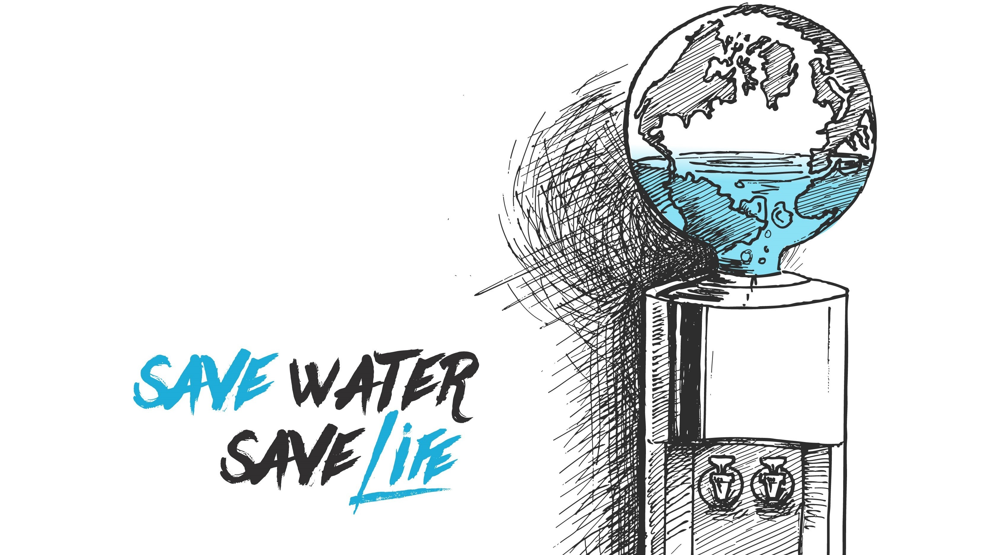

This data analysis project aims to identify the factors leading to pipe failures in water supply systems. Through the application of Python-based data analysis, the objective is to improve both the planning and operational practices of water utilities related to water supply systems.

The goal of this data analysis project is to craft a targeted marketing strategy for Instacart, an online grocery store. The objective is to maximize product sales by implementing customized campaigns tailored to diverse customer segments.
The goal of this data analysis project is to drive data-driven decision-making for RockBuster's online video launch. This involves addressing business challenges and facilitating strategic planning through SQL data analysis.

The aim of this project is to proactively plan staffing requirements for a medical staffing agency during influenza season by analyzing influenza trends, employing Tableau data analysis techniques.